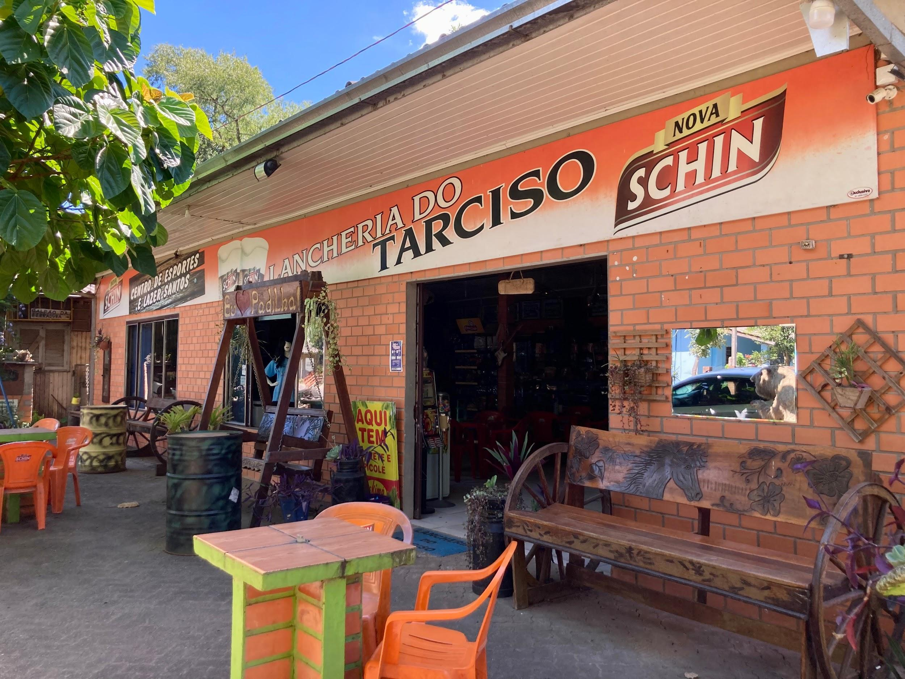
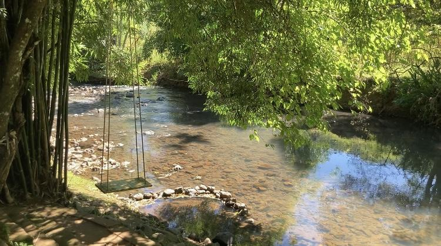

O Centro de Esporte e Lazer Santos, também conhecido como Lancheria do
Tarciso, é um ponto de encontro imperdível, localizado na Estr. Padilha Velha. O
estabelecimento oferece uma variedade de lanches deliciosos em um ambiente
acolhedor e familiar, perfeito para reunir amigos e familiares. Além disso, o Centro
de Esporte e Lazer Santos proporciona instalações esportivas, incluindo campinhos
de areia para futebol e vôlei, onde os visitantes podem se divertir e praticar esportes
ao ar livre. Com três churrasqueiras disponíveis para uso dos visitantes, é possível
aproveitar um delicioso churrasco enquanto desfruta da bela paisagem natural ao
redor. Estrategicamente localizado ao lado do rio, este estabelecimento oferece um
ambiente tranquilo e sereno, ideal para relaxar e descontrair

 - fundo verde.png)